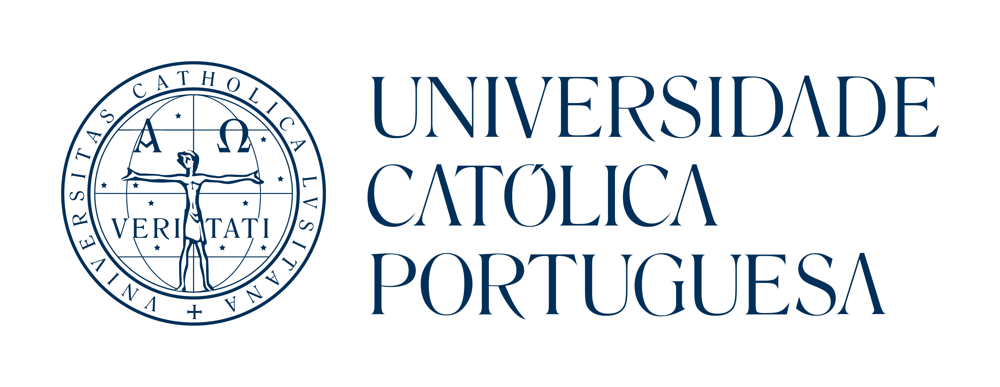
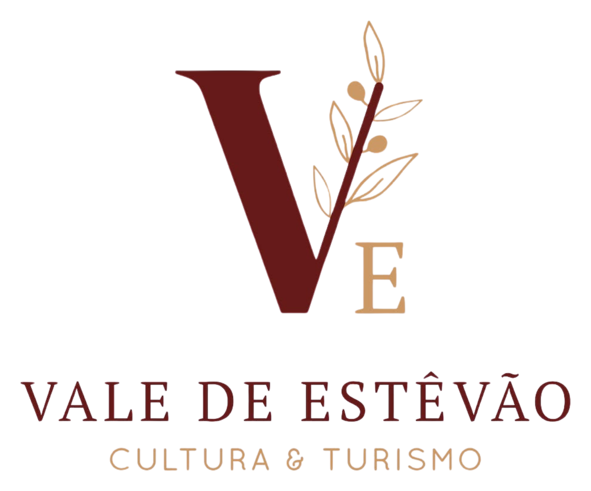
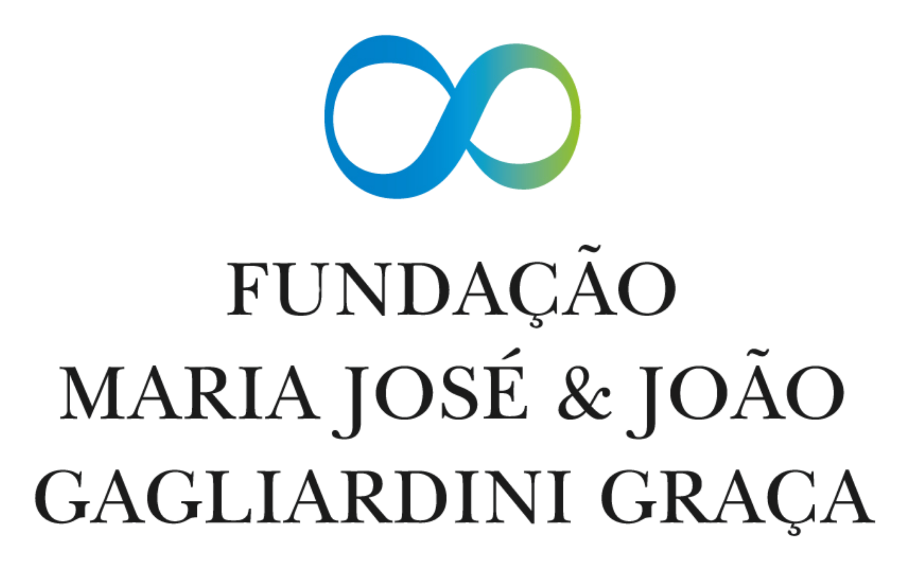

O Lado a Lado existe para dar resposta ao
desejo mais profundo que todos temos:
amar e sermos amados.
Milhares de jovens que escolhem amar a sério, por todo o país.
Não se vive lado a lado sozinho.
Caminhar com um casal padrinho
Para namorados que querem ser acompanhados de forma pessoal e próxima, por um casal jovem que já percorreu parte do caminho. Conversas reais, exemplo vivo e alguém a torcer por vocês a cada passo.
Conhecer gente, lado a lado
Corridas, passeios e convívios abertos a todos. A forma mais simples e descontraída de fazer amigos, conhecer pessoas e fazer parte do Lado a Lado.
Não nascemos ensinados. Também temos que aprender a amar.
{{ it.title }}
“Saí de lá a acreditar outra vez que vale a pena amar para sempre.”

“Pensava que o compromisso era antiquado. Hoje sei que é a coisa mais corajosa que existe.”

“Aprendi que o amor também se trabalha, e que não estou sozinho nesta caminhada.”

O Lado a Lado vive do contributo de quem se identifica com esta missão.
Apoia com um donativo
Cada contributo ajuda a levar campos, cursos e eventos a mais jovens por todo o país. Qualquer valor faz diferença.
Junta-te como voluntário
Dá o teu tempo e talento a montar eventos, acompanhar jovens, concretizar ideias e manter esta missão viva. Trabalhamos lado a lado, na prática.
Não fiques de fora
Recebe novidades, eventos e conteúdos para amar melhor — direto no teu email.


